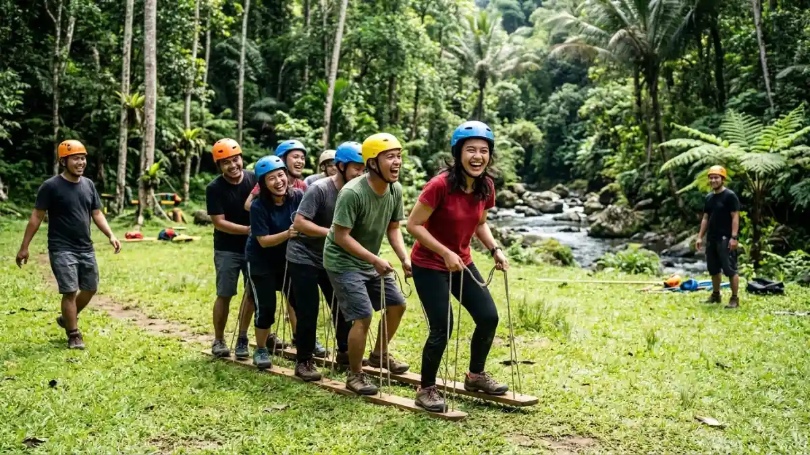

Outbound di Sumber Podang adalah kegiatan team building di kawasan wisata alam lereng Gunung Wilis, Kabupaten Kediri, yang mengandalkan sungai jernih dan udara pegunungan sebagai daya tarik utamanya.
DAFTAR ISI
- 1. Apa Itu Outbound di Sumber Podang?
- 2. Mengapa Sumber Podang Dipilih Sebagai Lokasi Outbound?
- 3. Apa Saja Aktivitas Outbound yang Bisa Dilakukan?
- 4. Siapa Saja yang Cocok Mengikuti Outbound Ini?
- 5. Bagaimana Cara Menuju Sumber Podang?
- 6. Berapa Estimasi Biaya Outbound di Sini?
- 7. Apa Saja Kesalahan Umum Saat Perencanaan?
- 8. Tips Sukses Merencanakan Outbound
- 9. Dibandingkan Destinasi Lain di Kediri
- 10. Kesimpulan
- FAQ
1. Apa Itu Outbound di Sumber Podang?
Outbound di Sumber Podang adalah rangkaian kegiatan pelatihan luar ruangan yang memanfaatkan lanskap alami kawasan wisata Sumber Podang sebagai lokasi utamanya.
Secara umum, outbound merupakan metode pembelajaran yang melibatkan interaksi melalui kegiatan yang menghibur dan menantang, dengan tujuan melatih kekompakan dan kemampuan bekerja sama antarpeserta. Konsep ini banyak diterapkan oleh instansi pendidikan, perusahaan, dan komunitas untuk memperkuat kerja tim di luar suasana formal.
Sumber Podang sendiri dikenal sebagai objek wisata alam yang termasuk dalam Wanawisata Sumberpodang di Kecamatan Semen, Kabupaten Kediri, Jawa Timur. Kawasan ini berada di lereng Gunung Wilis dan menawarkan pemandangan sungai jernih, perkebunan kopi dan cengkeh, serta udara sejuk khas pegunungan.
Karakter alam seperti ini menjadikan lokasi tersebut relevan sebagai tempat kegiatan outbound karena menyediakan ruang terbuka yang luas dan suasana yang jauh dari kebisingan kota.
Kegiatan outbound di lokasi ini umumnya dikelola oleh penyedia jasa outbound independen yang bekerja sama dengan pengelola kawasan wisata setempat, bukan oleh satu operator tunggal resmi. Oleh karena itu, jenis permainan, fasilitas pendukung, dan skema harga dapat berbeda tergantung penyedia jasa yang dipilih.
2. Mengapa Sumber Podang Dipilih Sebagai Lokasi Outbound?
Sumber Podang dipilih sebagai lokasi outbound karena kombinasi akses yang relatif mudah, suasana alam yang mendukung aktivitas kelompok, dan biaya kunjungan dasar yang tergolong terjangkau.
Kawasan Sumber Podang masuk dalam Rencana Induk Pengembangan pariwisata Kabupaten Kediri sebagai destinasi wisata alam berbasis ekowisata. Berdasarkan penelitian pengembangan wisata alam Sumber Podang yang dilakukan pada tahun 2023, tingkat kepuasan pengunjung terhadap kawasan ini tercatat sebesar 63,227 persen, yang berada pada kategori cukup puas, dengan catatan bahwa fasilitas dasar seperti area parkir, pos keamanan, dan sarana edukasi masih dalam tahap pengembangan lebih lanjut.
Dari sisi biaya masuk, berdasarkan liputan media pada tahun 2023, pengunjung Sumber Podang tidak dikenakan tiket masuk resmi dan hanya membayar biaya parkir kendaraan roda dua sebesar Rp3.000. Meski data ini berasal dari tahun 2023, kebijakan retribusi semacam ini umumnya relatif stabil, namun tetap disarankan untuk mengonfirmasi tarif terbaru kepada pengelola setempat sebelum berkunjung pada 2026.
Faktor lain yang membuat lokasi ini relevan untuk outbound adalah ketersediaan area terbuka di sekitar sungai dan lahan perkebunan yang dapat dimanfaatkan untuk permainan kelompok, tanpa memerlukan konstruksi wahana permanen.
3. Apa Saja Aktivitas Outbound yang Bisa Dilakukan di Sumber Podang?
Aktivitas outbound di Sumber Podang umumnya mencakup permainan kelompok, susur sungai ringan, dan sesi kebersamaan di area terbuka yang disesuaikan dengan jumlah dan tujuan peserta.
Beberapa jenis aktivitas yang lazim ditawarkan penyedia jasa outbound di kawasan wisata sungai serupa antara lain permainan estafet kelompok, tantangan menyeberang rintangan sederhana, sesi ice breaking, hingga kegiatan bermain air di area sungai yang dangkal dan aman.
Pemilihan jenis aktivitas biasanya disesuaikan dengan usia peserta, tujuan acara, dan kondisi cuaca pada hari pelaksanaan. Selain permainan kelompok, banyak rombongan juga memanfaatkan suasana sekitar Sumber Podang untuk kegiatan santai seperti makan bersama di kafe sekitar kawasan, sesi foto kelompok dengan latar pegunungan Wilis, atau evaluasi tim di ruang terbuka setelah sesi permainan selesai.
Detail lengkap mengenai jenis aktivitas dan fasilitas pendukung dapat dibaca pada artikel Aktivitas dan Fasilitas Outbound di Sumber Podang.

Contoh aktivitas permainan kelompok di alam terbuka kawasan wisata Sumber Podang. (Ilustrasi)4. Siapa Saja yang Cocok Mengikuti Outbound di Sumber Podang?
Outbound di Sumber Podang cocok diikuti oleh karyawan perusahaan, siswa sekolah, anggota komunitas, dan keluarga besar yang ingin melakukan kegiatan kebersamaan di alam terbuka.
Untuk kelompok perusahaan, kegiatan ini biasanya digunakan sebagai sarana team building tahunan atau acara family gathering. Bagi instansi pendidikan, lokasi ini dapat dimanfaatkan untuk kegiatan pengembangan karakter siswa di luar kelas.
Sementara itu, komunitas dan keluarga besar umumnya memanfaatkan kawasan ini untuk acara kumpul santai yang dipadukan dengan permainan ringan.
Manfaat utama mengikuti outbound di lokasi seperti ini antara lain melatih kekompakan tim, meningkatkan komunikasi antaranggota, dan memberikan pengalaman rekreasi yang berbeda dari aktivitas kantor atau sekolah sehari-hari. Adapun batasannya, kawasan ini masih tergolong wisata alam yang belum sepenuhnya dilengkapi fasilitas modern, sehingga peserta dengan kebutuhan aksesibilitas khusus sebaiknya berkoordinasi lebih dahulu dengan penyedia jasa outbound.
5. Bagaimana Cara Menuju Sumber Podang dari Kota Kediri?
Sumber Podang dapat dijangkau dari pusat Kota Kediri menggunakan kendaraan pribadi melalui Kecamatan Semen, dengan waktu tempuh yang bervariasi tergantung titik keberangkatan dan kondisi jalan.
Secara umum, akses menuju kawasan ini melewati jalur menuju lereng Gunung Wilis yang juga dilalui wisatawan menuju destinasi alam lain di sekitar Kabupaten Kediri. Kondisi jalan didominasi jalan desa dan jalan kabupaten, sehingga disarankan menggunakan kendaraan yang nyaman untuk medan berkontur dan mengecek rute melalui aplikasi peta digital sebelum berangkat.
Penjelasan rute yang lebih rinci, termasuk titik acuan perjalanan dan tips keberangkatan rombongan besar, dibahas secara khusus pada artikel Rute dan Cara Menuju Sumber Podang untuk Outbound.
6. Berapa Estimasi Biaya Outbound di Sumber Podang?
Estimasi biaya outbound di Sumber Podang terdiri dari biaya masuk kawasan yang relatif kecil dan biaya jasa penyelenggaraan outbound yang besarnya bervariasi tergantung penyedia jasa dan jumlah peserta.
Biaya dasar berupa retribusi parkir umumnya bernilai kecil, sebagaimana tercatat pada data tahun 2023 sebesar Rp3.000 untuk kendaraan roda dua. Di luar itu, biaya utama kegiatan outbound biasanya berasal dari jasa fasilitator, penyewaan peralatan permainan, konsumsi peserta, dan dokumentasi acara.
Karena skema ini dikelola oleh penyedia jasa yang berbeda-beda, harga paket dapat bervariasi cukup signifikan. Rincian komponen biaya, kisaran umum tiap jenis paket, dan tips negosiasi dengan penyedia jasa dibahas lebih lengkap pada artikel Paket dan Harga Outbound di Sumber Podang.
7. Apa Saja Kesalahan Umum Saat Merencanakan Outbound di Sumber Podang?
Kesalahan umum saat merencanakan outbound di Sumber Podang meliputi kurangnya konfirmasi jadwal dengan penyedia jasa, minimnya persiapan terhadap cuaca, dan tidak memperhitungkan kondisi medan alam.
Beberapa kesalahan yang sering terjadi antara lain tidak mengonfirmasi ketersediaan lokasi dan fasilitas kepada penyedia jasa outbound sebelum hari pelaksanaan, tidak menyiapkan rencana cadangan jika cuaca kurang mendukung, serta kurang memperhatikan kebutuhan peserta dengan kondisi fisik tertentu mengingat medan di sekitar sungai dan perbukitan cenderung tidak rata.
Kesalahan lain yang cukup umum adalah meremehkan waktu perjalanan menuju lokasi, terutama untuk rombongan besar yang menggunakan bus, sehingga jadwal acara menjadi molor dari rencana awal.
8. Tips Sukses Merencanakan Outbound di Sumber Podang
Beberapa tips yang dapat membantu kelancaran acara outbound di Sumber Podang adalah sebagai berikut:
- Hubungi penyedia jasa outbound dan pengelola kawasan minimal beberapa hari sebelum acara untuk memastikan ketersediaan lokasi.
- Siapkan rencana cadangan aktivitas indoor atau semi terbuka apabila cuaca hujan pada hari pelaksanaan.
- Sesuaikan jenis permainan dengan usia dan kondisi fisik peserta agar kegiatan tetap aman dan nyaman.
- Pastikan transportasi rombongan telah disesuaikan dengan kondisi jalan menuju lokasi.
- Bawa perlengkapan pribadi seperti alas kaki yang sesuai, pakaian ganti, dan obat pribadi jika diperlukan.
9. Outbound di Sumber Podang Dibandingkan Destinasi Lain di Kediri
Dibandingkan destinasi wisata buatan seperti taman rekreasi di dalam kota, Sumber Podang menawarkan suasana alam yang lebih alami namun dengan fasilitas pendukung yang relatif lebih sederhana.
Kabupaten Kediri memiliki beberapa alternatif lokasi yang juga menyediakan area outbound, seperti taman edukasi yang dilengkapi kolam ikan dan area bermain di dalam kota. Perbedaan utamanya terletak pada karakter lanskap, di mana Sumber Podang unggul dari sisi keaslian alam dan suasana pegunungan, sementara destinasi wisata buatan biasanya unggul dari sisi kelengkapan fasilitas modern.
Pemilihan lokasi sebaiknya disesuaikan dengan tujuan acara, jumlah peserta, dan preferensi suasana yang diinginkan.
10. Kesimpulan
Outbound di Sumber Podang menawarkan alternatif kegiatan team building berbasis alam di Kabupaten Kediri dengan biaya dasar yang terjangkau dan suasana pegunungan yang khas.
Perencanaan yang matang, mulai dari koordinasi dengan penyedia jasa, persiapan cuaca, hingga penyesuaian aktivitas dengan kondisi peserta, menjadi kunci utama agar kegiatan berjalan lancar.
Untuk perencanaan lebih detail, lanjutkan membaca panduan Paket dan Harga Outbound di Sumber Podang, Rute dan Cara Menuju Sumber Podang untuk Outbound, serta Aktivitas dan Fasilitas Outbound di Sumber Podang.